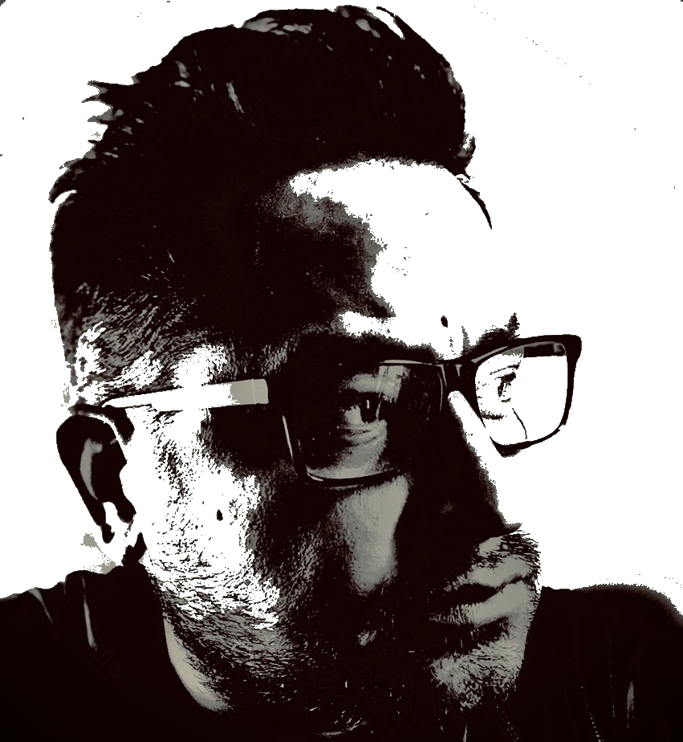

Rico Quintanilla
I love music, live preferably. I have a couple guitars at home that I pick up at least once a day to unwind. Coding podcasts and videos before crashing. I have an amazing wife who is also my best friend and beautiful daughter we could not be more proud of. I love soccer, and playing a round of golf when I can with friends or hitting the range. I am told I make some pretty good pancakes too.
Throughout my career, I have contributed to positive business results through effective organization.My strengths and qualifications are an ideal match for the Full Stack Developer requirements that will bring immediate value.
In August of 2019 I elected to enroll in the University of Kansas Full-Stack Coding Bootcamp. So glad I did .